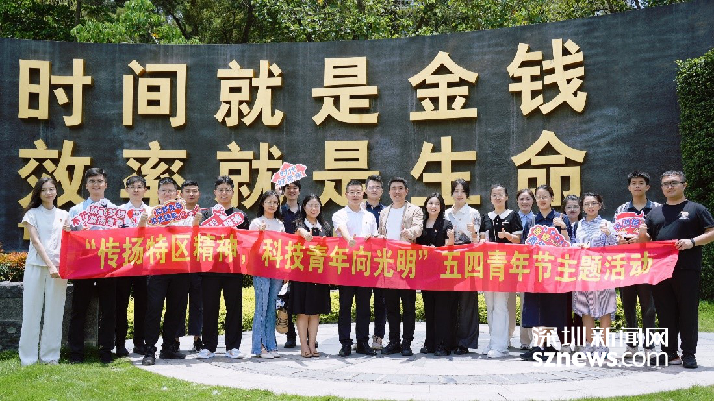
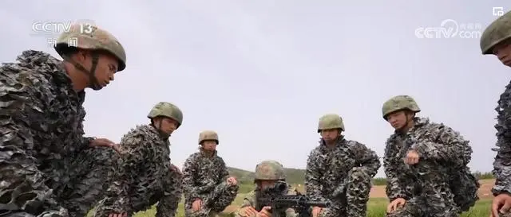

五四青年节:
五四青年节源于中国1919年反帝爱国的“五四运动”，五四爱国运动是一次彻底的反对帝国主义和封建主义的爱国运动，也是中国新民主主义革命的开始。1939年，陕甘宁边区西北青年救国联合会规定5月4日为中国青年节。
________———节日起源———________
________———文学记述———________
《五四有感》是著名外交家、当代诗词名家厉声教晚年于五四青年节时所作的一首五言律诗，旨在勉励青年人珍惜大好时光，积极进取。
全诗表达了作者对青春的真诚赞美和对青年的爱护与期望，以及自己志在归隐让贤的情怀。 查看更多
全诗表达了作者对青春的真诚赞美和对青年的爱护与期望，以及自己志在归隐让贤的情怀。 查看更多
________———新闻中心———________

深圳湾实验室携手多家科创相关单位举办五四青年节主题活动
深圳新闻网2024年5月16日讯（记者 林秋颖 ）近日，深圳湾实验室团委邀请多家知名科创相关单位成功举办“传扬特区精神，科技青年向光明”五四青年节主题活动。【详细】 2024-5-5
深圳新闻网2024年5月16日讯（记者 林秋颖 ）近日，深圳湾实验室团委邀请多家知名科创相关单位成功举办“传扬特区精神，科技青年向光明”五四青年节主题活动。【详细】 2024-5-5

五四精神成为穿越时空的“青春密码” 一代又一代中国青年凯歌前行
2024-5-5 央视网消息：5月4日是五四青年节，青春的气息扑面而来。青年志存高远，奋进潜力无限。
以奋斗姿态激扬青春——五四青年节话青春
2024-5-5 在位于四川成都的中国环流三号实验现场，不时闪动炫目的光芒：2022年10月，它创造等离子体电流115万安培的我国新纪录；2023年8月，实现国内首次100万安培等离子体电流下高约束模式运行，取得重大突破。
五四精神成为穿越时空的“青春密码” 一代又一代中国青年凯歌前行
2024-5-5 央视网消息：5月4日是五四青年节，青春的气息扑面而来。青年志存高远，奋进潜力无限。
以奋斗姿态激扬青春——五四青年节话青春
2024-5-5 在位于四川成都的中国环流三号实验现场，不时闪动炫目的光芒：2022年10月，它创造等离子体电流115万安培的我国新纪录；2023年8月，实现国内首次100万安培等离子体电流下高约束模式运行，取得重大突破。